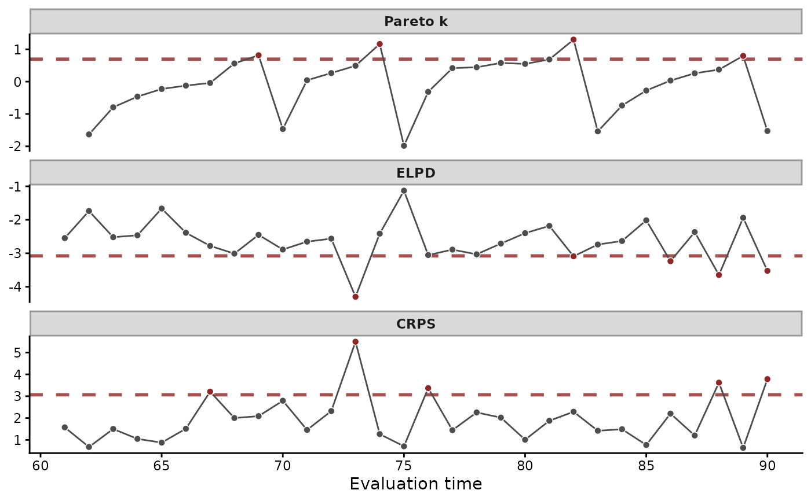

Approximate leave-future-out cross-validation of fitted mvgam objects
Source:R/lfo_cv.mvgam.R
lfo_cv.mvgam.RdScores a model on its forecasts. The model is fitted to the times up
to min_t and scored on the next fc_horizon observed times. The
origin then steps forward one time at a time. Pareto smoothed
importance sampling (PSIS) reweights the posterior to each new
origin. The model is refitted only where the Pareto k exceeds
pareto_k_threshold. The algorithm is that of Burkner, Gabry and
Vehtari (2020), as in the
loo PSIS-LFO vignette.
The ELPD of each fold is higher for the better model. CRPS and the
other scores of score.mvgam_forecast() are lower for the better
model. loo.mvgam() explains the ELPD and the Pareto k diagnostic.
Usage
lfo_cv(object, ...)
# S3 method for class 'mvgam'
lfo_cv(
object,
newdata = NULL,
min_t = NULL,
fc_horizon = 1L,
pareto_k_threshold = NULL,
score = "elpd",
save_log_lik = FALSE,
silent = 1L,
...,
data = NULL
)Arguments
- object
A fitted mvgam object.
- ...
Unused. Anything passed here is refused.
- newdata
Optional
data.frameholding the response, the time and series columns and the covariates.NULL(the default) takes the training data. Every series must share its observed times, except underCAR(), whose series may be observed at their own times.- min_t
The time at which the first training window ends. It must be a time present in the data, which need not be whole for an irregular
CAR()grid.NULL(the default) takes the 30th observed time, earlier for a shorter series, leaving at least 10 evaluation origins where the data allow.- fc_horizon
Integer number of observed times after each origin that are scored, whatever the gaps between them. Defaults to 1.
- pareto_k_threshold
Numeric. An origin whose Pareto k exceeds it triggers a refit.
NULL(the default) takes the adaptive thresholdmin(1 - 1 / log10(S), 0.7)forSposterior draws (Vehtari et al. 2024). It is stricter for a fit with few draws, where PSIS is less reliable.- score
Character vector of scores to compute at each origin, from
"elpd"(the default),"crps","drps","sis","brier","energy"and"variogram". The ELPD takes the PSIS log-likelihood. The others score forecast draws resampled by the PSIS weights, withscore.mvgam_forecast().- save_log_lik
Logical.
TRUEkeeps the held-out log densities under the reweighted posterior, an[ndraws, n_eval_obs]matrix.loo_model_weights.mvgam_lfo()stacks models by it. Defaults toFALSE, the matrix being large.- silent
Integer in
\{0, 1, 2\}.0prints each refit and its sampler start and finish lines.1(default) and2print nothing from the refits.- data
Deprecated alias for
newdata.
Value
A list of class mvgam_lfo, with one element per origin in
each vector.
elpds: the approximate ELPD of each origin,NULLunless"elpd"is inscore.sum_ELPDis their sum.scores: a named list with one vector for each other score.pareto_ks: the Pareto k of each origin's importance weights,NAwhere the model was refitted.eval_timepoints: the first scored time of each origin.n_obs: the number of responses each origin scores.refits_at: the last training time of each refit.refit_triggered:TRUEat each origin scored on a refit.pareto_k_threshold: the threshold used.TRUEinpareto_k_threshold_adaptivemarks the adaptive rule.fc_horizon: the horizon.log_lik: the held-out log densities whensave_log_lik = TRUE, otherwiseNULL.
References
Burkner, P.-C., Gabry, J. and Vehtari, A. (2020). Approximate leave-future-out cross-validation for Bayesian time series models. Journal of Statistical Computation and Simulation, 90(14):2499-2523. doi:10.1080/00949655.2020.1783262
Vehtari, A., Simpson, D., Gelman, A., Yao, Y. and Gabry, J. (2024). Pareto smoothed importance sampling. Journal of Machine Learning Research, 25(72):1-58. https://jmlr.org/papers/v25/19-556.html
See also
loo_compare.mvgam_lfo() ranks models by their
leave-future-out ELPD. loo_model_weights.mvgam_lfo() weights
them. loo.mvgam() approximates leave-one-out cross-validation.
kfold.mvgam() runs grouped k-fold cross-validation. The
forecast evaluation article
runs lfo_cv() on rodent counts, with its Pareto k refits and
stacking weights.
Other forecasting:
compare_scores(),
ensemble.mvgam_forecast(),
forecast.mvgam(),
hindcast.mvgam(),
score.mvgam_forecast()
Other model comparison:
bridge_sampler.mvgam(),
compare_elpds(),
kfold.mvgam(),
log_lik.mvgam(),
loo.mvgam(),
loo_compare.mvgam_lfo(),
mvgam_loo_extras,
posterior_average.mvgam(),
waic.mvgam()
Examples
# \dontrun{
set.seed(11)
simdat <- sim_mvgam(family = poisson(), n_series = 1L,
n_timepoints = 120L, trend_model = AR())
mod <- mvgam(
y ~ s(x, k = 5),
trend_formula = ~ AR(p = 1),
data = simdat$data_train,
family = poisson(),
chains = 2, silent = 2
)
#> Warning: 36 of 2000 (2.0%) transitions ended with a divergence.
#> See https://mc-stan.org/misc/warnings for details.
# Forecasts one time step after each origin from t = 60, scored by
# ELPD and CRPS. The model is refitted only where the Pareto k is high.
lfo <- lfo_cv(mod, min_t = 60L, score = c("elpd", "crps"))
#> Warning: 38 of 2000 (2.0%) transitions ended with a divergence.
#> See https://mc-stan.org/misc/warnings for details.
#> Warning: 54 of 2000 (3.0%) transitions ended with a divergence.
#> See https://mc-stan.org/misc/warnings for details.
#> Warning: 22 of 2000 (1.0%) transitions ended with a divergence.
#> See https://mc-stan.org/misc/warnings for details.
#> Warning: 19 of 2000 (1.0%) transitions ended with a divergence.
#> See https://mc-stan.org/misc/warnings for details.
#> Warning: 6 of 2000 (0.0%) transitions ended with a divergence.
#> See https://mc-stan.org/misc/warnings for details.
lfo
#> Approximate leave-future-out cross-validation
#> fc_horizon : 1
#> pareto_k_threshold : 0.697 (adaptive)
#> evaluation points : 30
#> refits : 5
#> ELPD : sum = -78.96, mean = -2.63
#> crps : sum = 57.91, mean = 1.93
# Pareto k, ELPD and CRPS at each origin. Points past the dashed
# line are highlighted
plot(lfo)

# One row per origin, with the refits in 'refit_here'
summary(lfo)
#> # A tibble: 30 × 6
#> eval_time refit_here pareto_k n_obs elpd crps
#> <int> <lgl> <dbl> <int> <dbl> <dbl>
#> 1 61 TRUE NA 1 -2.55 1.57
#> 2 62 FALSE -1.63 1 -1.74 0.677
#> 3 63 FALSE -0.793 1 -2.52 1.50
#> 4 64 FALSE -0.464 1 -2.46 1.05
#> 5 65 FALSE -0.227 1 -1.66 0.877
#> 6 66 FALSE -0.123 1 -2.39 1.51
#> 7 67 FALSE -0.0401 1 -2.78 3.21
#> 8 68 FALSE 0.563 1 -3.01 2.00
#> 9 69 TRUE 0.816 1 -2.45 2.09
#> 10 70 FALSE -1.47 1 -2.89 2.79
#> # ℹ 20 more rows
# Next, rank models by their forecasts with loo_compare()
# }